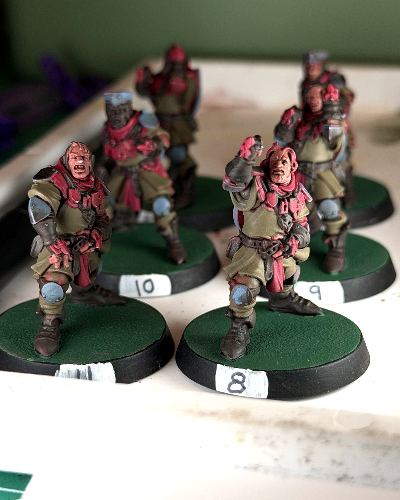
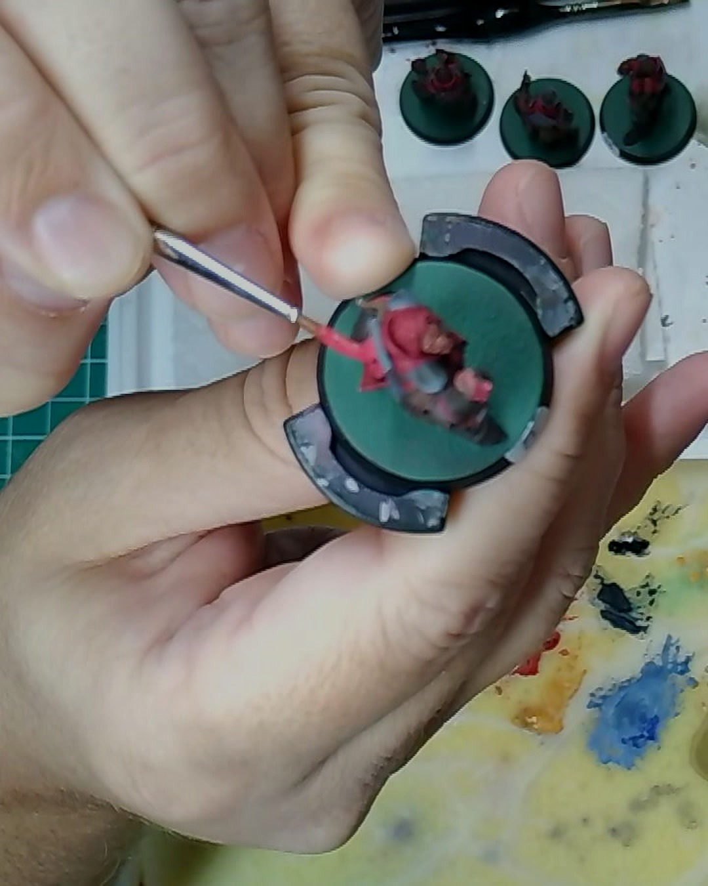
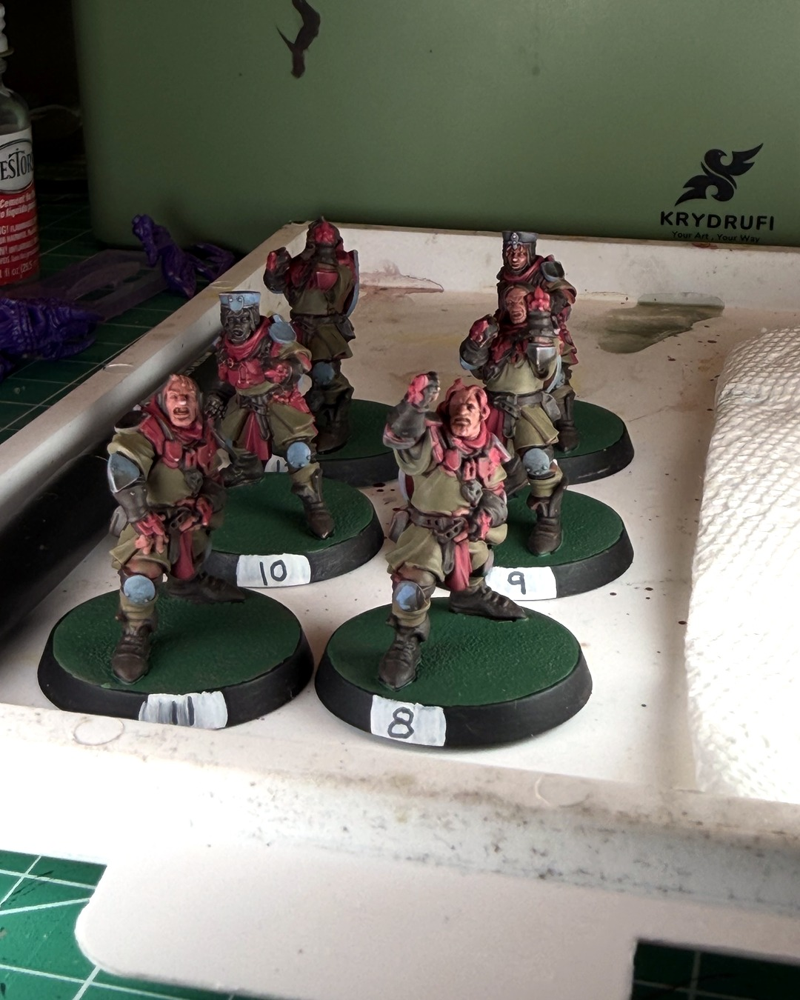

Squires keep dying, I keep painting
Every Bretonnian coach knows the squire life cycle. Take the field. Get flattened. Visit the dugout. Repeat. 🛡️
Mine have been dying at an alarming rate this season, and I keep painting them anyway. This session was another coat on the Holy Hand Grenadiers' squires, a lot of it building up the reds. There's still a long way to go: mid tones and highlights everywhere, base coats on some of the skin, and then the bases.
Is it smart to keep putting hours into linemen who don't survive the season? Probably not. But they look a lot better dying in team colors.
The painting station is from Krydrufi, 15% off with code lefthanded. Links in bio, and they're affiliate links, so using them supports me 🙌
@warhammerofficial @krydrufi
#miniaturepainting #bloodbowl #bretonnian #warhammercommunity #wip
Gear in this post
- Krydrufi V1 2.0 modular painting station also on AmazonThe modular painting kit that lets me paint at the kitchen table, with brush cleaner and holders built in15% off at Krydrufi with code lefthanded
Affiliate links. All gear